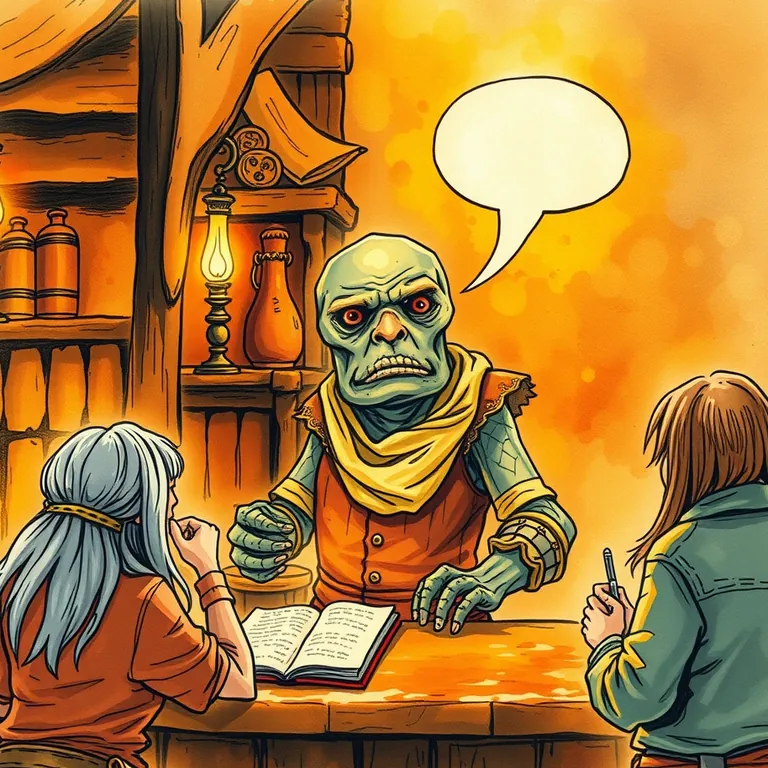

Chatbase

It answered the same question forty times a day so the shopkeeper wouldn't have to answer it a forty-first.
Chatbase is best used for building a chatbot trained on your own documents to answer the same customer questions over and over so a human doesn't have to. A shopkeeper who answers the same three questions all day never gets to the actual work. This handles the repetition and frees them up. It lands at #37 of 51 on Solos Gems (6.0/10) for customer support.
It answered the same question forty times a day so the shopkeeper wouldn't have to answer it a forty-first time, which is either a mercy or a small tragedy, depending on how much the shopkeeper liked the customers.
- Value for price5/10
- Capability7/10
- Ease of use6.5/10
- Trial safety6.5/10
Best used for
Building a chatbot trained on your own documents to answer the same customer questions over and over so a human doesn't have to.
How it helps the realm
A shopkeeper who answers the same three questions all day never gets to the actual work. This handles the repetition and frees them up.
Boons
- Trains directly on your own documents, so answers stay specific to your actual business.
- Deploys to a website widget without much technical setup required.
- Handles a high volume of repetitive questions without getting tired or short-tempered.
Curses
- Setup and training quality directly determine how good the answers are; garbage in, garbage out.
- Complex or unusual customer questions still need a human to step in.
Common questions
Does it work off my own website content, or does it guess?
It trains specifically on documents and pages you provide, not general internet knowledge.
Can it hand off to a human when it doesn't know the answer?
Yes, escalation to human support is a supported workflow.
How much setup does it take to get running?
A basic version can be running same-day; refining its accuracy takes ongoing tuning.